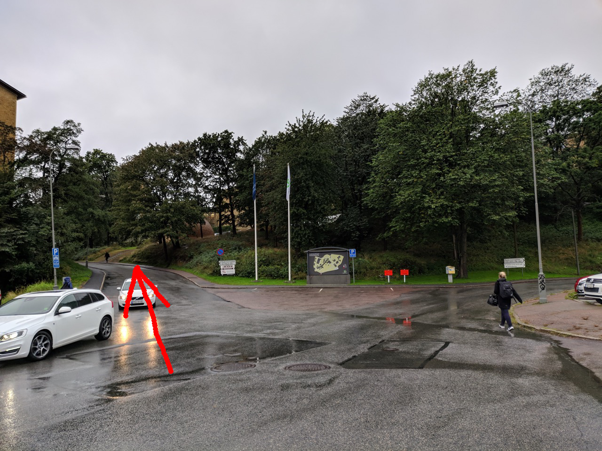
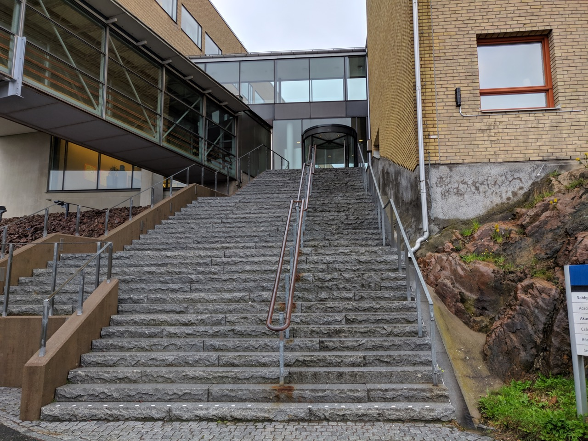
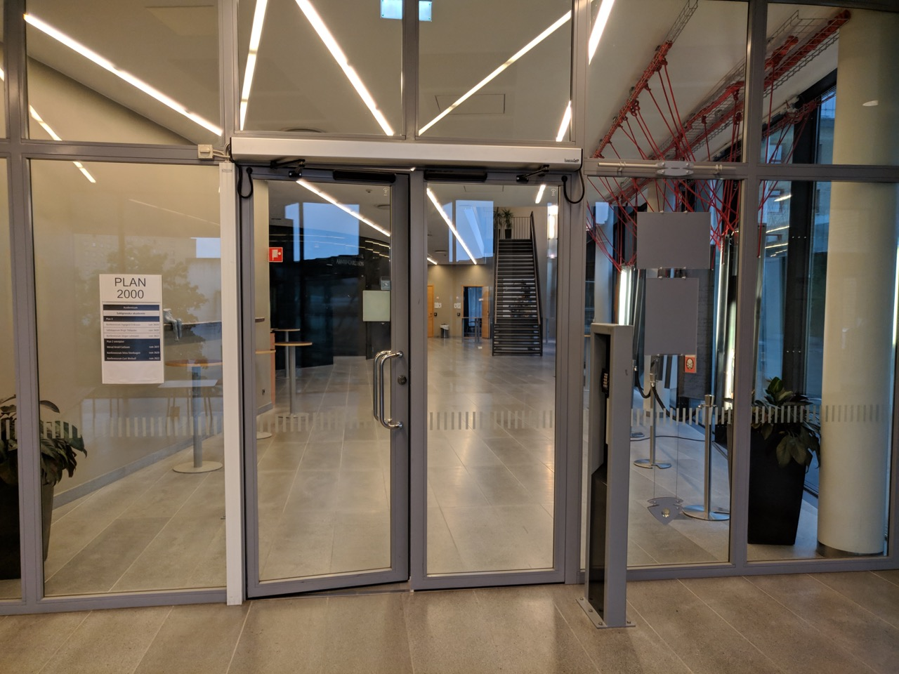
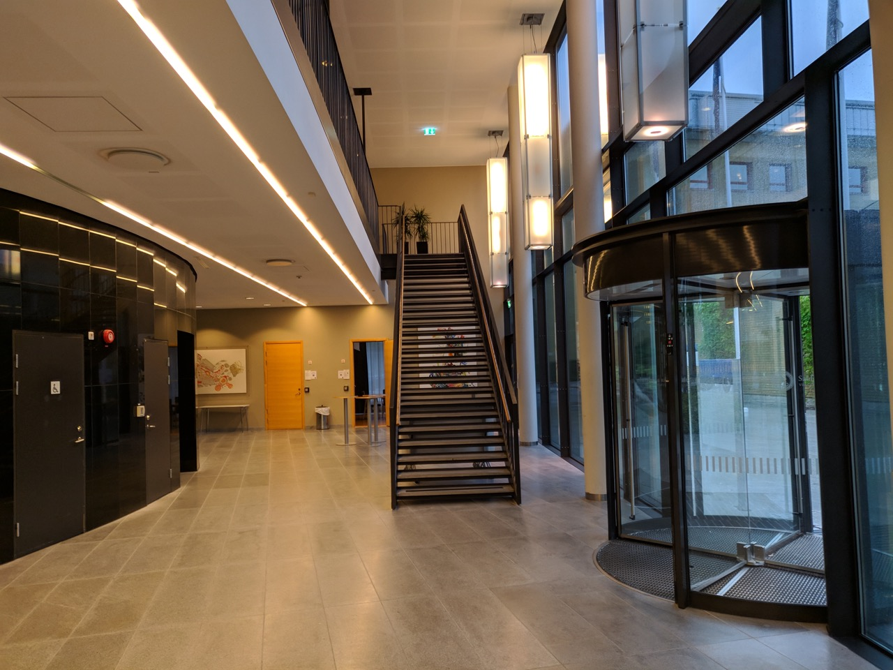
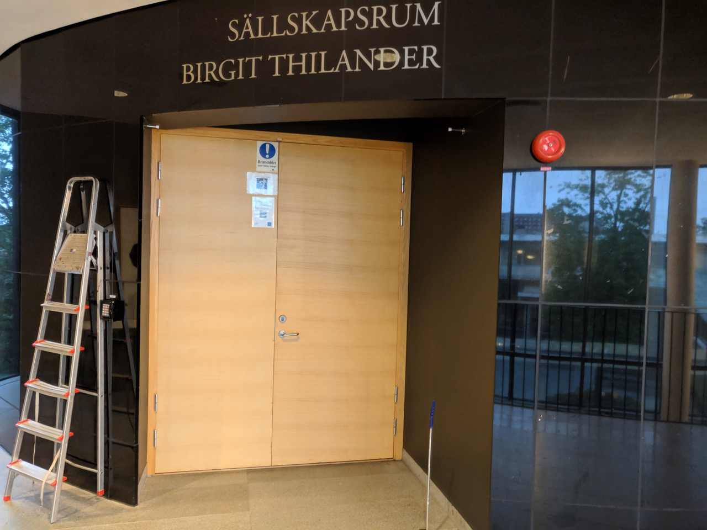

Venue and Accommodation
Summer school Venue
The summer school will be organized at the University of Gothenburg in the centre of Gothenburg. The sessions on Monday and Tuesday, September 9-10, will be held at Wallenberg Conference Center (blue 1 on the map below). The sessions on Wednesday, Thursday, and Friday, September 11-13, will be held at Academicum (blue 2 on the map below). Both venues are within short walking distance of each other. For a detailed overview of the venues, see this map (numbers 20A and 3). The nearest public transport bus/tram stops to the venue are Sahlgrenska Huvudentré, and Medicinaregatan.
Getting to Academicum
Wednesday to Friday, the summer school changes venue to the Birgit Thilander auditorium in Academicum. To get to Academicum from the Medicinareberget tram stop, follow the route outlined below.Once you reach a very tall staircase on your right, you're almost there. Walk up the stairs, take a left when you reach the top. Enter throght the glass doors on your right and walk up the stairs. On your left you will find the auditorium.
Coming form the tram stop, follow the road to the left.

Walk up these stairs.

Through these doors.

Up these stairs.

This is the venue. Take the second door, after the elevator.

Accommodation
Summer school attendees are expected to book their own accommodation. There is no official hotel for the summer school. A short selection of hotels with rates negotiated by the University of Gothenburg is available below. To receive the negotiated rates, attendees should book the hotel via mail or phone and specifically mention they are attending a conference organized by the University of Gothenburg.
The hotels are within 25-30 minutes walk (2-2.5 km / 1.2-1.5 miles) or 10-15 minutes by public transportation. Alternative means of transport include the Gothenburg rental bike system Styr & Ställ and several providers of electric scooters (VOI, Tier, Lime )
- Quality Hotel Panorama 821SEK single, 1,021SEK double (red 1 on map below). Nearest bus stop: Utlandagatan
- Gothia Towers 1,062SEK single, 1,262SEK double (red 2). Nearest bus/tram stop: Korsvägen
- Elite Park Avenue 1,116SEK single, 1,295SEK double (red 3). Nearest bus/tram stop: Valand
- Scandic Rubinen 1,010SEK single, 1,278 double (red 4). Nearest bus/tram stop: Valand